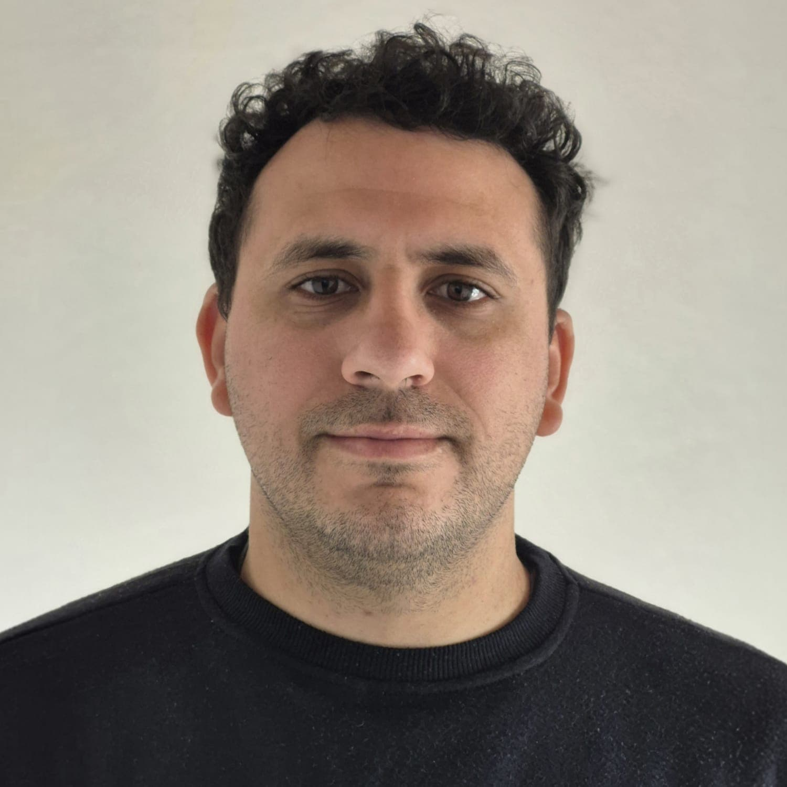

Alejandro Jorge | WDD 130
I'm 34 years old. I got married with Rocio on September 2015 and by now we have 3 children:
- Isabela (7yo)
- Rene (4yo)
- Alfonsina (6mo)
Since I returned, I served as Stake Young Men President, Elders Quorum President, Counselor on the Bishopric and currently as Bishop.
I enjoy cooking, watching series, training in the gym, swimming, and playing with my kids.
I'm currently working as Data Analyst on a company called "Accenture"